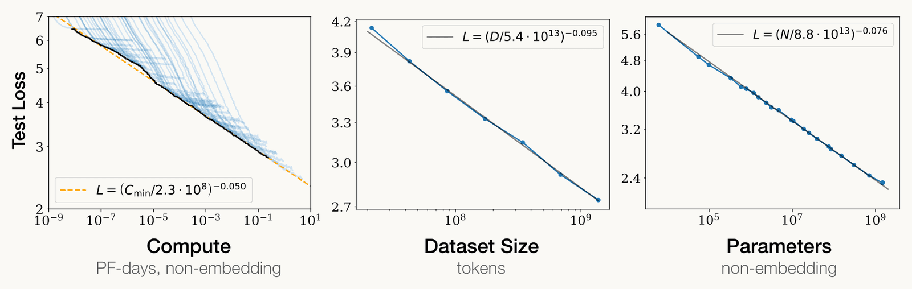
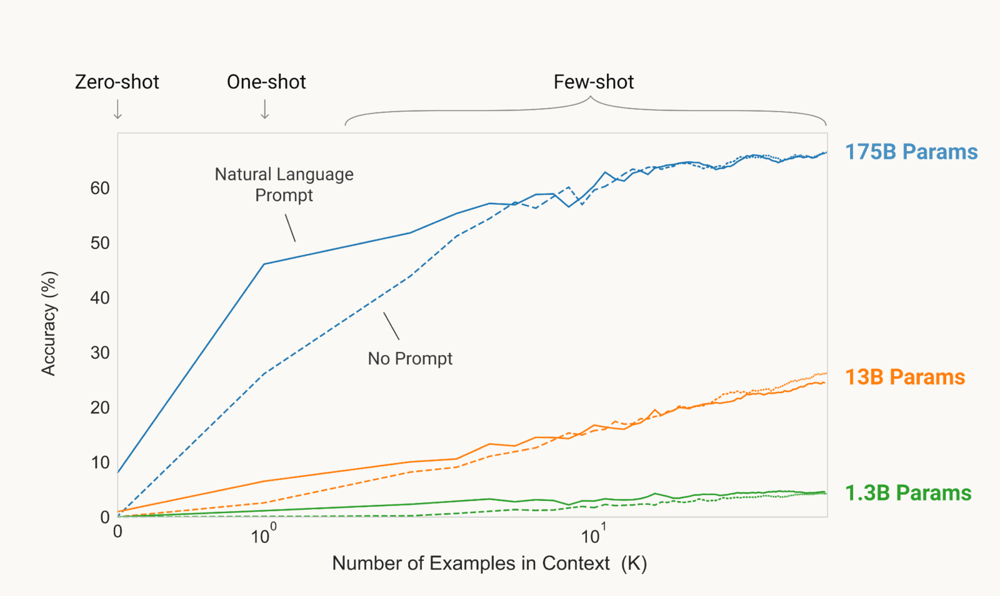
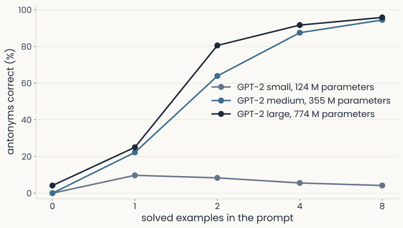
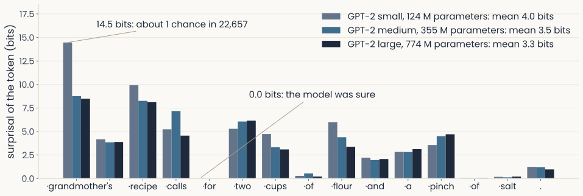
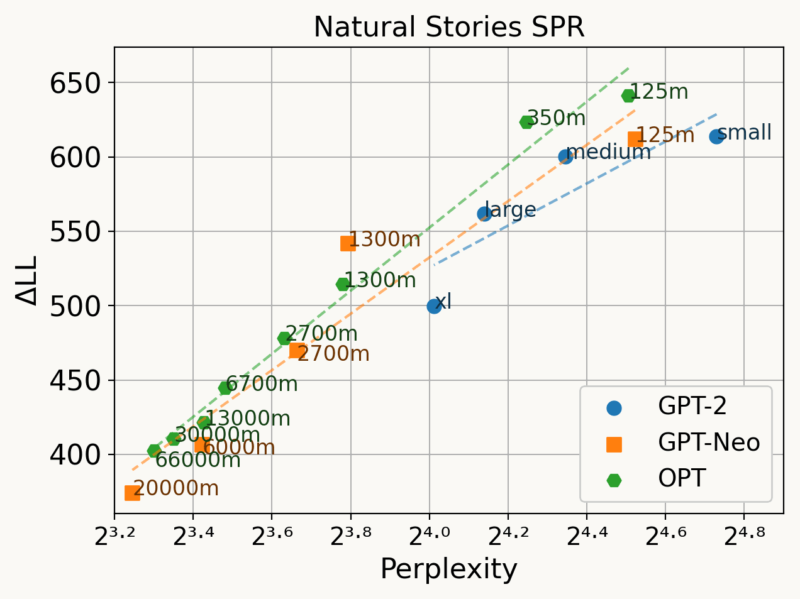
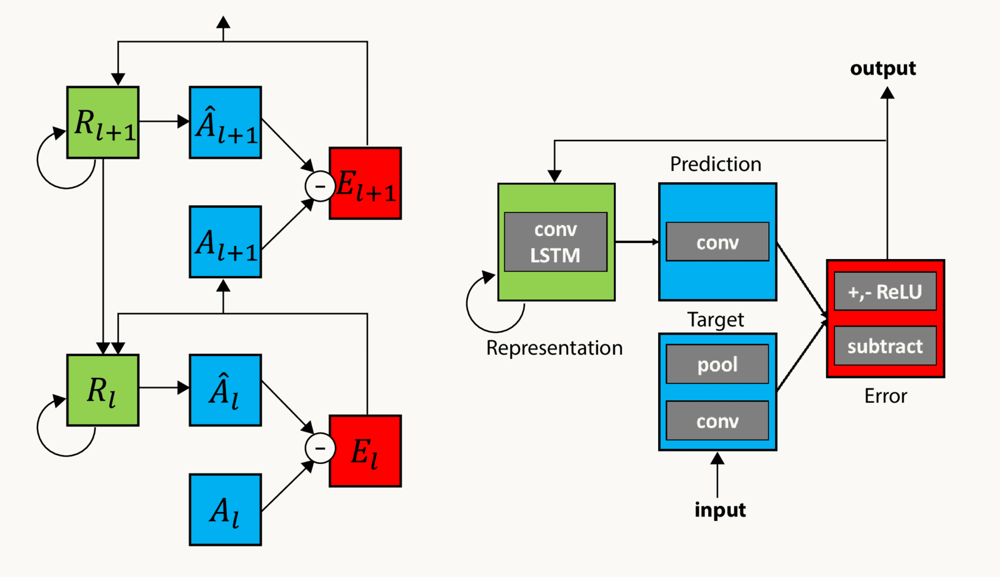

Large language models and the brain
Reader-friendly version of the 35 lecture slides: the lecture content in normal flow, with figure descriptions and data tables where the figure carries data. Open the presentation.
Slide 1

Large language models and the brain
Slide 2
Finish the sentence
He spread the warm bread with ___
- You predicted butter before you read the blank. A language model does the same: it gives a probability to every possible next word
- Had the word been socks, your brain would have responded about 400 ms later with the N400, a negative wave in the EEG, the electrical activity recorded from electrodes on the scalp
- Today: what next-word prediction at scale builds, and whether it describes how people read and how the brain predicts
Slide 3
From a block to a model
The same transformer, trained on more text than anyone could read
Slide 4
Where we left off
- Last lecture, the whole pipeline: tokens → embeddings → blocks (attention + a small network) → logits → softmax → next-symbol probabilities; to write, sample, append, repeat.
- The objective does not change: predict the next symbol, self-supervised, so every document is its own training signal; by the chain rule, a next-symbol predictor assigns a probability to a whole text
- Scaling laws: the loss falls as a predictable power law in parameters, data and compute (a straight line on log–log axes). Llama 3 was trained on about 15 trillion tokens, about 11 trillion words: over a hundred million books
- Two things change today: the symbols (word pieces instead of characters) and the scale (billions of weights, trillions of tokens)
- What does scale buy, and what does the result tell us about human language?
Slide 5
What scale buys: a smooth law for the loss

Figure 1 of Kaplan et al.: three log-log panels of test loss against compute, dataset size and parameters, each a straight line, a power law, over several orders of magnitude; the fitted exponents are minus 0.050, minus 0.095 and minus 0.076
Open full-size figure
- Test loss falls as a power law in compute, data and parameters, over seven orders of magnitude; at a fixed size, depth against width barely matters
- For a fixed budget, grow parameters and data together: Chinchilla, a 70 B model trained on 1.4 T tokens, beat the 280 B Gopher. The law predicts the loss, not what the model can do
Slide 6
From characters to word pieces
- Large models read tokens: entries of a fixed vocabulary of word pieces, learned from text by byte-pair encoding (BPE)
- BPE starts from the 256 single bytes and repeatedly merges the most frequent adjacent pair into a new piece, until the vocabulary has the size asked for
- Common words become one piece; rare ones split. GPT-2's vocabulary (50,257 pieces):
neuroscienceis one piece ·unbelievable→un+bel+iev+able·Mulroney→Mul+r+oney· the inventedZorblat→Z+or+bl+at - Vocabulary sizes: 50,257 pieces for GPT-2; about 128,000 for Llama 3. Rule of thumb for English: 1 token ≈ 0.75 words
Slide 7
In-context learning

Accuracy against the number of examples in the prompt, from zero-shot through one-shot to few-shot, for three GPT-3 sizes. The 175-billion-parameter model climbs from under to about 67%; the 13-billion model reaches about and the 1.3-billion model stays below 5%. Solid lines add a natural-language description of the task, dashed lines do not
Open full-size figure
- Put a few input→output examples in the prompt and the model does the task: zero-shot (a description only), one-shot (one example), few-shot (a handful). More examples → better, all at inference; the model's weights stay frozen
Slide 8
The same thing in a model you can run

Antonyms correct in percent against the number of solved examples in the prompt, 0, 1, 2, 4 and 8, for GPT-2 small, medium and large. Small stays below 10 percent at every count. Medium rises from 0 to 22, 64, 88 and 94 percent; large from 4 to 25, 81, 92 and 96 percent
Open full-size figure
Real computation: GPT-2 small, medium and large, weights as trained · 32 antonym pairs, 24 test words × 3 random orders per point
- Prompt:
hot -> cold,big -> small, … thenwet ->. With eight examples, GPT-2 medium and large answer 94–96% of antonyms; GPT-2 small never gets the task. No weight changed
Slide 9
In-context learning: a mechanism you have seen
- Nobody trained for it: it appears from next-token prediction at scale
- One circuit behind it is the induction head from the lecture on building a language model: at a repeated word, read what followed that word last time, and copy it. Induction heads form abruptly during training, at the point where in-context learning improves
- A forward pass can run a learning algorithm: one attention layer can take a gradient step on the examples in its context, and transformers trained on regression tasks match gradient descent or ridge regression
- Learning on a fast timescale without changing a weight: activity, not synapses, carries the new task
Slide 10
The same recipe in real systems
What a 2026 model is, and what every prompt does
Slide 11
Large language models, as of November 2026
- GPT-2 (2019, 1.5B parameters) → GPT-3 (2020, 175B): prompting with a few examples works
- ChatGPT (Nov 2022): a pretrained model fine-tuned to follow instructions
- Reasoning models (OpenAI o1, 2024; DeepSeek-R1, 2025): trained by reinforcement learning to write long chains of steps before answering
- Many current models are mixtures of experts: each token is routed to a few of many MLPs, so only part of the weights run per token
- The same stack reads image patches, audio and video as tokens: multimodal models. Context windows grew from 2,048 tokens (GPT-3) to about a million
- Many long-context models are hybrids: mostly recurrent layers, a few attention layers (next lecture)
- Open weights: Llama, Qwen, Gemma; Pythia, OLMo also release data and checkpoints
Slide 12
Alignment: from autocomplete to assistant
Pretraining gives a next-token predictor, not an assistant. Then:
- Supervised fine-tuning on human-written demonstrations of good answers
- Learning from preferences. RLHF (reinforcement learning from human feedback) fits a reward model to human choices between two answers, then tunes the model by reinforcement learning to score high. DPO (direct preference optimization) learns from the same choices directly, with no reward model
- Reinforcement learning from verifiable rewards: reward answers that a program can check, such as a math result or code that passes its tests. This is how reasoning models learn to write out intermediate steps before answering: extra tokens, not extra weights (test-time compute)
Slide 13
Every prompt is in-context learning
- What a deployed assistant reads before it answers is one long context: the provider's instructions, your earlier messages, the examples you give, and retrieved documents, web pages, files or tool results pasted into the context by the system (retrieval-augmented generation)
- Two kinds of knowledge: what the weights learned in pretraining, and what sits in the context right now. Only the second can change during a conversation
- The assistant does not learn from your conversation: when the context is gone, so is everything in it
- The cost: the keys and values of every token in the context are kept while the model answers, which is why a million-token window is expensive
Slide 14
A model of the reader, and of the brain?
The same next-word probabilities, now compared with people
Slide 15
Surprisal: a theory of reading, a quantity from the model
- Surprisal theory came first, from psycholinguistics: the reading time of a word (how long the eyes rest on it, or how long a reader waits before pressing a key for the next one) grows with its surprisal, linearly in the log of its probability, over several orders of magnitude
- It also predicts the N400 of the opening sentence: the EEG wave about 400 ms after a word, larger when the word is unexpected
- A language model gives the surprisal of every word in any text, so the theory can be tested at scale
Slide 16
Surprisal from a real model, token by token

Bar chart of surprisal in bits for each token of the sentence My grandmother's recipe calls for two cups of flour and a pinch of salt, three bars per token for GPT-2 small, medium and large. Grandmother is the most surprising token, 14.5 bits for the small model and about 8.5 for the larger two; recipe about 8 to 10 bits; for and the second of are near zero for every model; salt is near zero. Means 4.0, 3.5 and 3.3 bits
Open full-size figure
Real computation: GPT-2 small, medium and large, weights as trained · a dot marks a piece that begins with a space
- Each bar is of the probability the model gave the token that actually came next. Function words after a verb cost nothing; the content word that opens the sentence costs 14.5 bits. Bigger model, fewer bits: 4.0 → 3.5 → 3.3 on average
Slide 17
Against human readers: bigger is not better

Scatter plot of regression log-likelihood gain against perplexity on Natural Stories self-paced reading, for GPT-2 small to XL, five GPT-Neo and eight OPT models with dashed least-squares lines per family. Every family slopes the same way: the smallest models, with the highest perplexity, give the largest gain near 600 to 640, and the largest models, 20 to 66 billion parameters, the smallest, near 380 to 400
Open full-size figure
- Natural Stories (Futrell et al. 2021): 181 readers, ten stories. Fit reading time by least squares on word length and frequency, add surprisal as a predictor, score the gain in log-likelihood (ΔLL)
- Better at the text (lower perplexity, the average surprise), worse at the readers, in three families
Slide 18
Better language model, better brain model?
- Brain responses: yes, so far. Models that predict the next word better also predict brain responses to language better, in fMRI (blood oxygenation, whole brain, a few seconds' resolution) and ECoG (electrodes on the surface of the cortex, milliseconds), and the fit grows logarithmically with size up to 30-billion-parameter models
- Measured with an encoding model: a linear readout from the model's activations to each voxel or electrode, scored on held-out text
- Reading times: no, past a point. Surprisal from larger models fits readers worse (previous slide)
- Still open: brain and behavior disagree about which model is best. One reason: large models have read far more text than any person, so some words are easy for them and not for a reader
Slide 19
Using the model to control the brain
![Figure 2 of Tuckute et al.: A, the left-hemisphere language network on an inflated brain; B and C, bar charts of the language network's fMRI response to drive, suppress and baseline sentences, in an event-related design with three participants and a blocked design with four. Drive sentences give the highest response and suppress sentences the lowest in both; D, example sentences: drive sentences are odd or ungrammatical, such as Jiffy Lube of, of therapies, yes; suppress sentences are plain, such as We were sitting on the couch](../images/L18/pub_tuckute2024_fig2_drive_suppress.png)
Figure 2 of Tuckute et al.: A, the left-hemisphere language network on an inflated brain; B and C, bar charts of the language network's fMRI response to drive, suppress and baseline sentences, in an event-related design with three participants and a blocked design with four. Drive sentences give the highest response and suppress sentences the lowest in both; D, example sentences: drive sentences are odd or ungrammatical, such as Jiffy Lube of, of therapies, yes; suppress sentences are plain, such as We were sitting on the couch
Open full-size figure- Fit an encoding model from GPT-2 XL to the language network's fMRI response to 1,000 sentences, then let it choose new sentences predicted to drive or silence the network. In new participants they did: unusual, barely grammatical sentences drive it, plain ones suppress it
Slide 20
Language models and the brain: current readings
- Four more results, all with encoding models, now down to single neurons:
- Hours of real conversation: one speech-to-text model's sound, speech and word embeddings each predict ECoG activity across 100 h of everyday conversation, and the model's levels line up with the cortical hierarchy (Goldstein et al. 2025)
- Single neurons: the same readout, neuron by neuron, separates cells that track a word's part of speech and dependencies from cells that track phrase and sentence structure (Cai et al. 2026)
- What the fit tracks: across 34 training checkpoints, it follows a model's grammatical knowledge, not its world knowledge or reasoning (AlKhamissi et al. 2025)
- A caution from 2026: shuffled train–test splits, pooling choices and confounds such as word rate fully account for the brain fit of untrained models and inflate some influential results (Hadidi et al. 2026)
Slide 21
The assistant you may use on the project
- AI assistants are allowed on the final project, with disclosure. They are the models from today
- What follows from how they are built: trained to produce likely text, not true text, they hallucinate citations and results; and they are prompt-sensitive, so rephrase a question and the answer can change
- So check every claim and citation an assistant gives you against its source; the writer–critic workflow from recitation does this systematically
- As models of human cognition, LLMs are a live, contested research program
Slide 22
The brain as a prediction machine
From predicting to learn to predicting to perceive
Slide 23
Predictive coding: the core claim
- Perception is not passive feedforward feature extraction
- The brain runs an internal generative model and constantly predicts its sensory input
- What flows up the hierarchy is not the raw signal but the prediction error: the part the model failed to predict. The brain spends its signals on what it did not expect
- Lineage: Helmholtz (unconscious inference) → Rao & Ballard (1999) → Friston (free energy)
- A hypothesis, not a settled fact: language data support it (next slide), but recordings across cortical layers show feedback that enhances predicted activity rather than cancelling it (Westerberg & Roelfsema 2026)
Slide 24
Testing it with a language model

Figure 2 of Caucheteux et al.: a, the brain score of GPT-2 activations on fMRI from 304 listeners, highest along the superior temporal sulcus; b and d, adding the model's representation of words d positions ahead improves the brain score, with a peak at about 8 words ahead; c, the regions where this forecast gain is significant, temporal, parietal and frontal; e to g, the best forecast distance grows from temporal regions (about 8 words) to frontal and parietal regions (about 9 to 10 words)
Open full-size figure- 304 people listened to stories in the fMRI scanner. Adding GPT-2's representation of words up to 8 ahead improved the fit, and frontal areas predict further ahead than temporal ones
Slide 25
Predictive coding and autoencoders
- An autoencoder also minimizes a reconstruction residual , but updates its weights by backprop: one forward and one backward sweep
- Predictive coding minimizes the same residual by iterative settling: a higher level's estimate of the causes relaxes until its prediction explains the input (Rao & Ballard 1999); the weights follow a local rule
- A shared goal, don't be surprised by your input, reached in two ways: an encoder trained by backprop, and a candidate biological one (an estimate that settles, with local error circuits)
Slide 26
Open questions
- Brain or behavior? Bigger models fit brain responses better and reading times worse. Which should a cognitive model answer to, and would a model trained on about as much text as a person reads fit both?
- Prediction, or its appearance? A brain fit that improves with upcoming words shows the brain carries information about what comes next. It does not show that the brain sends prediction errors up, as predictive coding claims
- In-context learning in a brain? A model learns a task from its prompt with frozen weights, in its activations. Is some fast human learning also held in activity rather than in changed synapses?
Slide 27
Recap
- One objective (next token) + one architecture (decoder transformer) + scale = LLMs; word pieces from byte-pair encoding are the symbols
- In-context learning appears without being trained for, in GPT-2 medium as in GPT-3; every prompt uses it, and nothing is learned into the weights
- Surprisal in bits, , from LLMs tracks brain responses and reading times, but larger models fit readers worse while fitting the brain better, and a brain fit needs its controls
- Predictive coding: the brain may predict its input and send errors up; the evidence runs both ways
Slide 28
For your final project
- Dates: teams registered on Canvas Thu 11/19 · proposal, one page per team, Wed 12/2 at 11:59 PM · poster session and report Mon 12/21 at 9:00 AM
- Data and models: anything from the lectures and assignments, or anything else you can get your hands on; GPT-2 or Pythia for surprisal run on the course Colab
- AI tools are permitted on the project; at the poster we may ask either of you about any line of your code
- The brief, with dates and the proposal checklist: serre-lab.github.io/CPSY1291-2026/final-project
- Questions from today: which model size fits readers best, and does the answer change with the reading-time corpus? Does a network trained without labels (the lecture on learning without labels) rival a supervised one on your brain data?
Slide 29
Going further
Predictive coding in detail
Slide 30
Rao & Ballard (1999)
- Each level predicts the level below through top-down connections; the residual, the prediction error, is sent bottom-up
- A higher level holds an estimate of the causes, predicts lower activity , and the error drives the update
- Trained on natural-image patches, it develops oriented, Gabor-like receptive fields, as sparse coding did, and predicts surround suppression
Slide 31
The predictive-coding equations
At one level: prediction of the level below , error .
Inference (fast, within one stimulus: settle to reduce the error):
Learning (slow, across stimuli: a local, Hebbian-like rule):
- is the top-down prediction; carries the error bottom-up
- Both updates use only locally available quantities (error × activity): no global backward pass
Slide 32
Predictive coding as a deep net: PredNet
- Lotter, Kreiman & Cox stacked Rao–Ballard-style modules: each layer predicts the layer below and passes the prediction error up, trained on video to predict the next frame
- The trained network reproduces perceptual effects nobody built in, such as the flash-lag illusion
- From brain to AI: a 1999 theory becomes a trainable architecture

The PredNet module: representation units emit a prediction of the layer below, the mismatch becomes an error signal, and errors propagate up the hierarchy
Open full-size figure
Slide 33
Is backprop biologically plausible?
- Backprop's problems for biology: a separate backward pathway; weight transport (backward weights must equal the forward ones); a global two-phase schedule; non-local error signals
- Predictive coding offers local learning: errors computed in place by error units; updates use only the activity of the connected units
- Under some conditions predictive coding approximates the backprop gradient
- Still a hypothesis: direct evidence for cortical error units is debated
Slide 34
Further reading for the research trail
Optional: a few research-trail entries over the semester. Any paper mentioned in any lecture qualifies, but papers from these lectures are preferred.
- Oh & Linzen TICS 2026: to model human prediction, make language models less superhuman
- Hadidi et al. Nat Commun 2026: how model–brain alignment can arise from confounds
- Cai et al. Nature 2026: single human neurons during speech, read through a language model
- Goldstein et al. Nat Hum Behav 2025: one speech model's levels match the cortical hierarchy during real conversation
- AlKhamissi et al. EMNLP 2025: brain alignment tracks a model's grammar, not its world knowledge
- Westerberg & Roelfsema TICS 2026: cortical feedback during perception does not do what predictive coding predicts
Slide 35
Minute paper
Submit on Canvas → Minute papers → Minute Paper 18 (access code read out in class).
Write three brief points in your own words:
- A language model can learn a new task from a few examples written in its prompt.
Where does that learning live while the model does the task,
and what happens to it when the conversation ends? - Something you do not yet understand, or a question still open
- Another idea you found interesting, and why it matters for brains, behavior or AI
Credit for a thoughtful attempt, not for being correct.